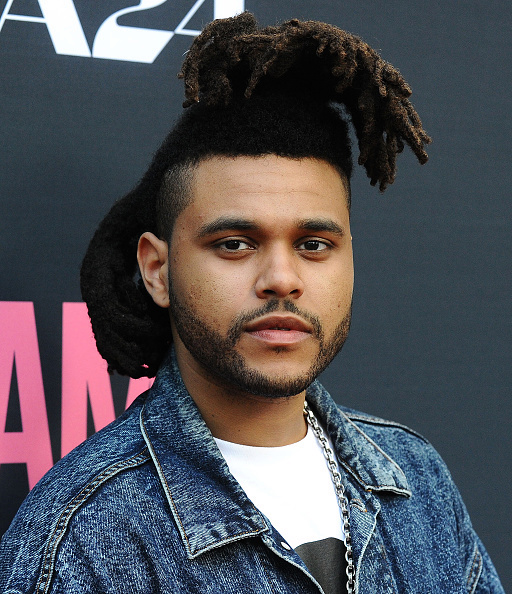
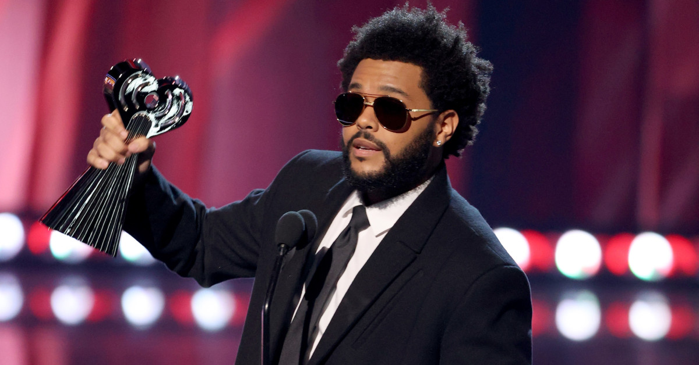

<The Weeknd
个人简介 重要事件 主要成就 主要作品 生活照 生平
The Weeknd
Abel Makkonen Tesfaye，1990年2月16日出生，艺名The Weeknd，华语圈绰号盆栽，
是一名加拿大歌手、词曲作家、音乐制作人及舞者。作为曾经另类R&B先锋之一，极大地
影响了另类R&B的发展与风潮。
重要事件
2010年末，Tesfaye上传了一些歌曲至YouTube并署名“The Weeknd”。他在201
1年发布三支内有九首歌的混音带：《House of Balloons》、《Thursday》、《Echoes of Silence》，
这些混音带广受好评。翌年，他发布了合辑《Trilog
y》，其由混合不同元素的三十首翻唱曲目以及三个额外的歌曲组成。此专辑是由
Republic唱片及XO共同推出。
2013年，The Weeknd推出了他的首张录音室专辑《Kiss Land》，主打歌为《Kiss
Land》及《Live For》。
2015他的第二张录音室专辑《Beauty Behind the Madness》，成为他第一张登
上公告牌二百强专辑榜
冠军专辑。其中单曲《earned it》登上了公告牌百强单曲榜前五名，《The hills》、《
Can't Feel My Face》则登上了公告牌百强单曲榜第一名。上述单曲都同时在“公告牌
热门节奏布鲁斯歌曲榜”前三名，使得他成为史上第一位囊括“公告牌热门蓝
调歌曲榜”前三名的歌手。他曾经获得两座格莱美奖，以及被奥斯卡最佳原创歌曲奖
提名。
2016年9月，The Weeknd宣布将发行新专辑《Starboy》，并释出2支单曲：《Starboy》及《Flase Alarm》。
2019年11月，The Weeknd回归并释出2支单曲《Heartless》及《Blinding Lights》。2020年2月，The Weeknd公布新专辑名称《After Hours》，
且释出一支专辑同名单曲，并宣布将在一个月后发行此专辑。2020年3月20日，新专
辑《After Hours》正式发行。
2022年1月7日惊喜释出《After Hours》的下一篇张《Dawn FM》
主要成就
The Weeknd赢得了三项格莱美奖、十九项公告牌音乐奖、六项美国音乐奖、两项MTV视频音乐奖和十五项朱诺奖。
他还获得了奥斯卡奖、拉丁格莱美奖和黄金时段艾美奖的提名。
2014 年 10 月，特斯法耶因“在音乐、电影、文学、视觉或表演艺术、体育、创新或慈善领域产生积极影响”而被加拿大星光大道授予艾伦·斯莱特荣誉。
2021 年，多伦多市长庄德利宣布，该市将把 2 月 7 日定为“周末”，以纪念特斯法耶在超级碗中场休息时的表现。
主要作品
混音带
年份
《House of Balloons》
（2011）
《Thursday》
（2011）
《Echoes of Silence》
（2011）
合辑
年份
《Trilogy》
（2012）
《The Weeknd in Japan》
（2018）
《The Highlights》
（2021）
录音室专辑
年份
《Kiss Land》
（2013）
《Beauty Behind the Madness》
（2015）
《Starboy》
（2016）
《After Hours》
（2020）
《Dawn FM》
（2022）
迷你专辑
年份
《My Dear Melancholy》
（2018）
《After Hours (Remixes)》
（2020）
生活照


生平
Abel Makkonen
Tesfaye生于1990年2月16日的加拿大安大略斯卡伯勒。童年亦在该处成长。他是位独生子。他拥有埃塞俄比亚血统。父母亲马康南（Makkonen）及萨姆拉（Samra）在1980年代从埃塞俄比亚移民至加拿大。他的母亲曾经做过几项工作包括护理，餐饮，夜校。
在特斯法耶长大的过程中，他父亲就不在身边了，他的母亲时时刻刻在工作，他的祖母照料他大部分的青春岁月。因此，特斯法耶会说一口流利的阿姆哈拉语，这是他学会的第一种语言。他的祖母会带他去埃塞俄比亚正教会服务。
特斯法耶自我描述了他的青少年时期的电影“孤立无援的儿童”("KIDS without the AIDS")。
特斯法耶说，他采用了艺名The Weeknd的由来是在17岁高中辍学之后，他与他的同侪在一个周末（weekend）时，在家人都不知道的情况下离家出走。他更改了weekend拼写方式，以避免与加拿大乐队The
Weekend有商标上的问题。